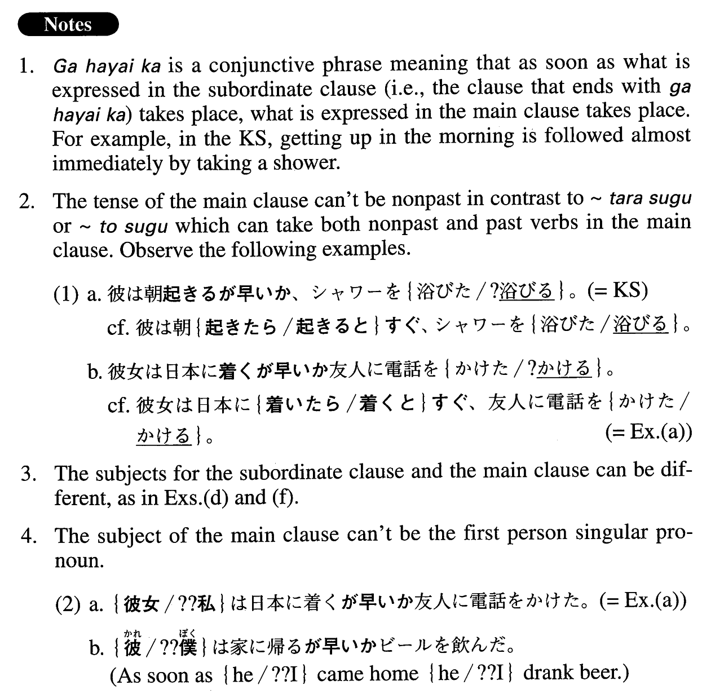

が早いか (A. 99)
- (ks).
- 彼は朝起きるが早いか、シャワーを浴びた。
- As soon as he woke up he took a shower.
- (a).
- 彼女は日本に着くが早いか友人に電話をかけた。
- The moment she arrived in Japan she called her friend.
- (b).
- 彼は私がいるのを見るが早いか、部屋を出て行ってしまった。
- As soon as he saw me, he left the room.
- (c).
- 猫は鼠を捕まえるが早いか、食べ始めた。
- The moment the cat caught the mouse, it started to eat it.
- (d).
- 電車はジョンが乗るが早いか、動き始めた。
- As soon as John got on the train, it started to move.
- (e).
- ディーンは奇麗な女の子を見かけるが早いか、近寄って行って話しかけた。
- No sooner did Dean see the pretty girl than he approached her and started talking to her.
- (f).
- 子供たちはパンが焼けるが早いか、全部食べてしまった。
- As soon as the bread was baked, the children ate it all.
- (g).
- ひったくりは金を奪うが早いか、自転車で逃げた。
- As soon as the thief (literally: snatcher) snatched my money, he fled by bike.
